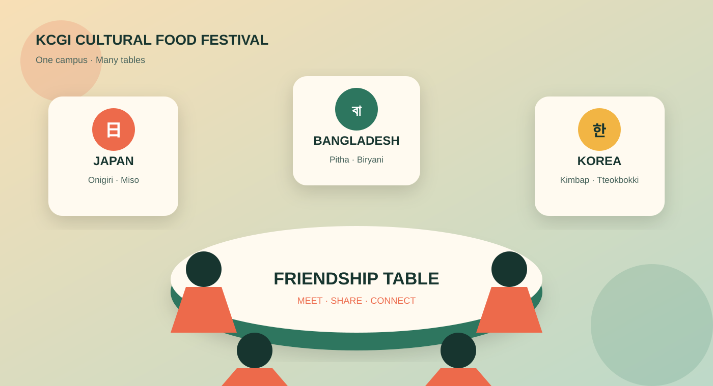

Taste
Visit six digital country stalls and discover a signature food from each culture.
The digital festival is open
Step into our online Cultural Food Festival: a projected KCGI venue filled with country stalls, traditional dishes, cultural stories, and new friendships.
Culture is served

Project outcome
This website presents a complete digital festival experience. Visitors can move through a projected KCGI location, explore country stalls, learn the meaning behind traditional foods, and imagine meeting other students through a shared table.
The visitor journey
Visit six digital country stalls and discover a signature food from each culture.
Hear the traditions, ingredients, and memories connected to every dish.
Use food as a friendly starting point for conversations across KCGI.
“Different foods create one shared KCGI table.”
— Cultural Food Festival outcome